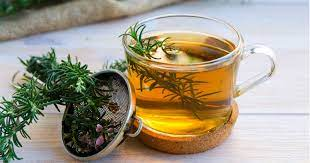
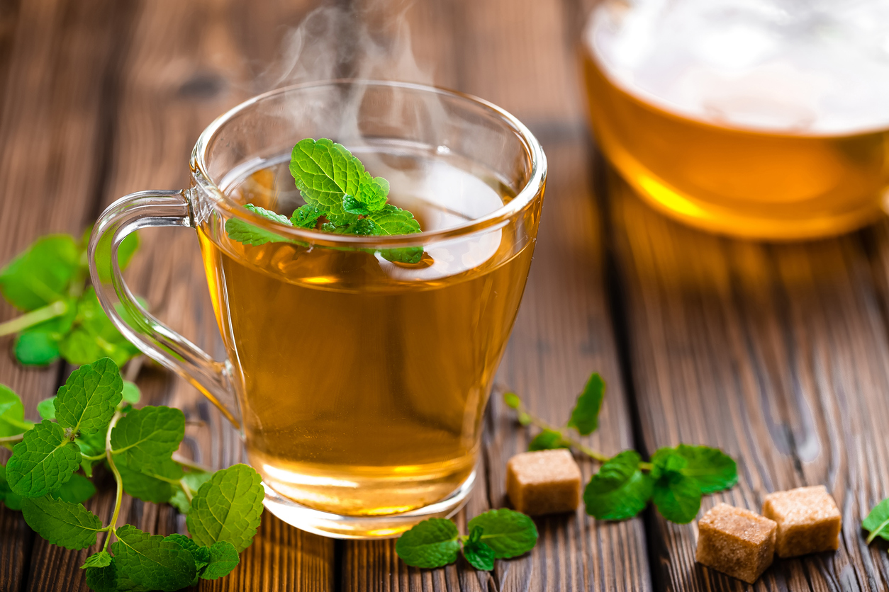
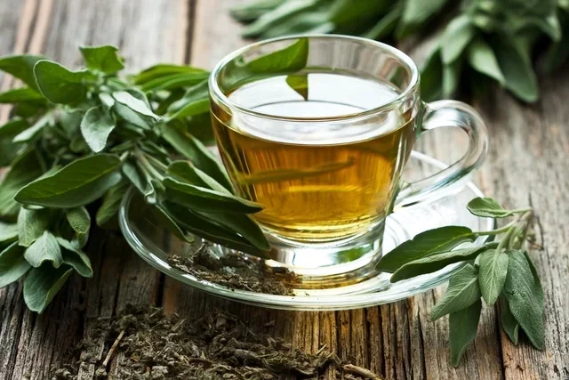

Chá de alecrim

Propiedades
O chá de alecrim é uma bebida popularmente consumida por suas propriedades potencialmente benéficas para a saúde. No entanto, é importante notar que os benefícios do chá de alecrim podem variar de pessoa para pessoa, e não há garantias de que ele terá os mesmos efeitos em todos. Algumas das propriedades associadas ao chá de alecrim incluem:
- Estimulação da memória: O alecrim contém compostos que podem ajudar a melhorar a função cognitiva e a memória. Beber chá de alecrim ocasionalmente pode ser benéfico para a concentração e a clareza mental.
- Propriedades antioxidantes: O alecrim é rico em antioxidantes, como ácido rosmarínico e flavonoides, que podem ajudar a combater os danos causados pelos radicais livres no corpo. Os antioxidantes são importantes para a saúde geral e podem ajudar a reduzir o risco de doenças crônicas.
- Propriedades anti-inflamatórias: Alguns estudos sugerem que o alecrim pode ter propriedades anti-inflamatórias, o que pode ser benéfico para pessoas que sofrem de condições inflamatórias, como artrite.
- Estímulo digestivo: O chá de alecrim pode auxiliar na digestão, aliviando sintomas como inchaço e gases. Também pode estimular o apetite.
- Potencial para aliviar dores de cabeça: Algumas pessoas relatam que o chá de alecrim pode ajudar a aliviar dores de cabeça e enxaquecas.
- Suporte ao sistema imunológico: Os antioxidantes e outros compostos presentes no alecrim podem ajudar a fortalecer o sistema imunológico, tornando o corpo mais resistente a infecções.
- Propriedades diuréticas: O chá de alecrim pode atuar como um diurético leve, ajudando a eliminar o excesso de líquidos do corpo. Isso pode ser benéfico para pessoas com retenção de líquidos.
- Aromaterapia: Além dos benefícios quando ingerido, o aroma do alecrim é frequentemente utilizado na aromaterapia para promover relaxamento e alívio do estresse.
É importante notar que, embora o chá de alecrim possa oferecer benefícios à saúde, ele não deve ser consumido em excesso, pois pode ter efeitos colaterais. Pessoas que estão grávidas, amamentando ou têm condições médicas pré-existentes devem consultar um profissional de saúde antes de adicionar chá de alecrim à sua dieta regular. Além disso, é importante lembrar que o chá de alecrim não é uma cura milagrosa para qualquer condição de saúde e deve ser parte de um estilo de vida geralmente saudável.
Chá de hortelã

Propiedadees
O chá de alecrim é uma bebida popular que tem sido consumida por séculos devido aos seus potenciais benefícios para a saúde. Aqui estão alguns dos benefícios associados ao consumo de chá de alecrim:
- Alívio da digestão: O chá de hortelã é conhecido por ajudar na digestão e aliviar sintomas como indigestão, gases, náuseas e cólicas abdominais. Ele relaxa os músculos do trato gastrointestinal, o que pode facilitar a passagem de alimentos.
- Redução de enjoos: A hortelã pode ajudar a aliviar sintomas de enjoo, como os relacionados à gravidez ou ao movimento. O chá de hortelã é muitas vezes recomendado para aliviar esses desconfortos.
- Alívio de dores de cabeça e enxaquecas: A hortelã possui propriedades analgésicas e relaxantes musculares que podem ajudar a aliviar dores de cabeça e enxaquecas quando consumida como chá ou em forma de óleo essencial.
- Respiração fresca: A hortelã é conhecida por seu efeito refrescante na boca e na garganta. Beber chá de hortelã ou simplesmente mastigar folhas de hortelã pode ajudar a manter o hálito fresco.
- Redução do estresse: O aroma de hortelã é frequentemente utilizado na aromaterapia para aliviar o estresse, relaxar os músculos e melhorar o ânimo. Beber chá de hortelã pode ter um efeito calmante semelhante.
- Propriedades antioxidantes: A hortelã contém antioxidantes que combatem os radicais livres, ajudando a proteger as células do corpo contra danos oxidativos.
- Suporte à saúde respiratória: O chá de hortelã pode ajudar a aliviar sintomas de resfriados, gripes e problemas respiratórios, graças ao seu efeito descongestionante e ao alívio da irritação na garganta.
- Hidratação: O chá de hortelã é uma opção saudável e saborosa para se manter hidratado, especialmente quando consumido quente ou gelado.
Para fazer o chá de hortelã, basta ferver água e despejá-la sobre as folhas de hortelã frescas ou secas. Deixe as folhas em infusão por cerca de 5 a 10 minutos, coe e beba. Você também pode adicionar mel ou limão para dar mais sabor. No entanto, evite consumir hortelã em grandes quantidades, pois, em excesso, pode causar irritação gastrointestinal em algumas pessoas. Como sempre, se você tiver alguma condição médica específica, consulte um profissional de saúde antes de fazer grandes mudanças em sua dieta.
Chá verde

Propiedades
O chá verde é uma bebida popular conhecida por seus potenciais benefícios para a saúde devido à sua riqueza em antioxidantes e outros compostos bioativos. Aqui estão alguns dos benefícios associados ao consumo de chá verde:
Antioxidantes:
- Antioxidantes: O chá verde é uma excelente fonte de catequinas, um tipo de antioxidante que combate os radicais livres no corpo. Esses antioxidantes podem ajudar a proteger as células contra danos e envelhecimento prematuro.
- Saúde cardíaca: Vários estudos sugerem que o consumo regular de chá verde pode estar associado a uma redução do risco de doenças cardiovasculares. As catequinas no chá verde podem ajudar a diminuir o colesterol LDL (colesterol ruim) e melhorar a saúde dos vasos sanguíneos.
- Controle de peso: O chá verde é frequentemente considerado um aliado na perda de peso. Ele pode aumentar a taxa metabólica e a oxidação de gorduras, tornando-o potencialmente útil como parte de uma estratégia de controle de peso quando combinado com uma dieta equilibrada e exercícios.
- Melhora da função cerebral: Alguns estudos sugerem que o chá verde pode melhorar a função cognitiva e a memória, devido à presença de compostos como a L-teanina, que pode ter efeitos estimulantes suaves.
- Saúde oral: O chá verde possui propriedades antibacterianas que podem ajudar a combater bactérias na boca, reduzindo o risco de cáries dentárias e melhorando a saúde bucal.
- Regulação do açúcar no sangue: O chá verde pode ajudar a controlar os níveis de açúcar no sangue, o que é benéfico para pessoas com diabetes tipo 2 ou que estão em risco de desenvolver a condição.
- Proteção contra o câncer: Embora mais pesquisas sejam necessárias, alguns estudos sugerem que as catequinas no chá verde podem ter propriedades anticancerígenas e podem ajudar a reduzir o risco de certos tipos de câncer, como o câncer de mama, próstata e cólon.
- Saúde da pele: Os antioxidantes no chá verde podem ajudar a melhorar a saúde da pele, reduzindo os danos causados pelos radicais livres e combatendo o envelhecimento precoce.
É importante observar que os benefícios do chá verde podem variar de pessoa para pessoa, e é aconselhável consumi-lo com moderação. Além disso, a qualidade do chá verde e a preparação adequada (não superaquecê-lo, por exemplo) podem influenciar seus benefícios. Consultar um profissional de saúde é uma boa ideia, especialmente se você tiver alguma condição médica ou estiver tomando medicamentos, para garantir que o consumo de chá verde seja seguro e adequado para você.